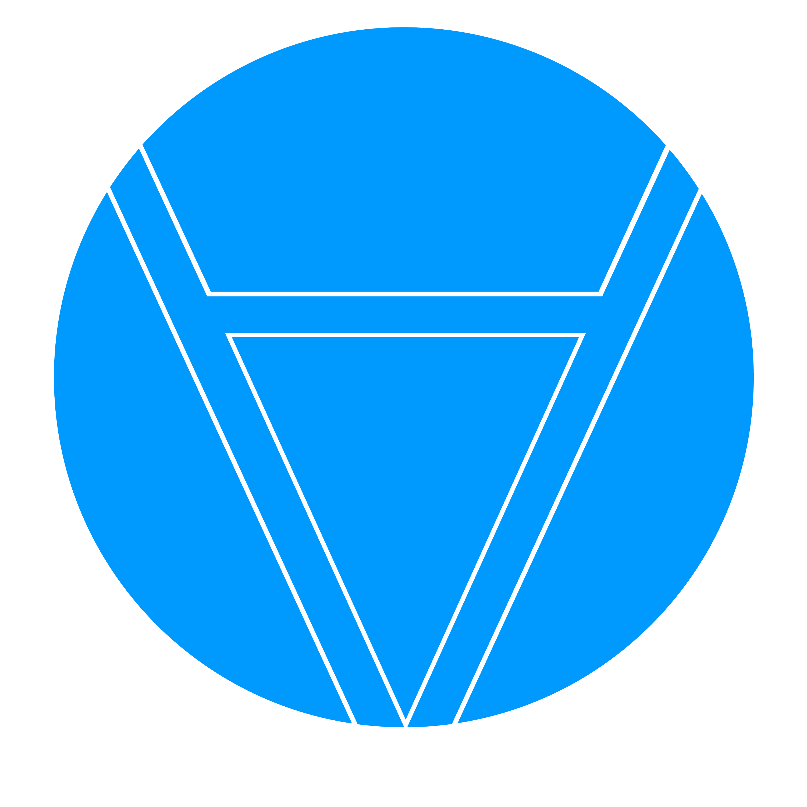

Spring 2019
Predicate
Formal Methods Editor
When someone asks me to work with a good team, I often say yes even if I am not 100% qualified. That was the case with this formal methods editor. I have done a bit of HTML and CSS (as you can see from this portfolio site), but I’m not quite an expert yet. A friend asked me if I would be willing to lend a hand, doing the front end development for a project to help the teacher’s assistants of a computer science class grade math homework. Below you will see what we created. Looking back on the project, it’s a great memory because there was so much autonomy in the project. We all did what we did best and relied on the rest of the team for support.
Logo
Logo was based off of the predicate symbol in formal methods.
Logo
The logotype used other symbols found in the editor as well as my own creative system to create other symbols